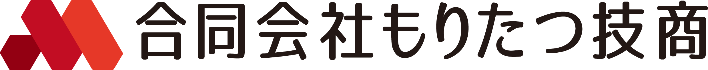
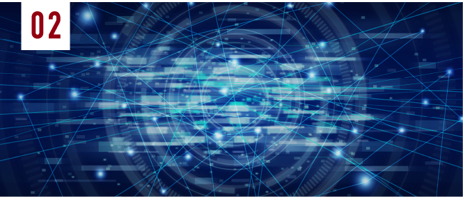
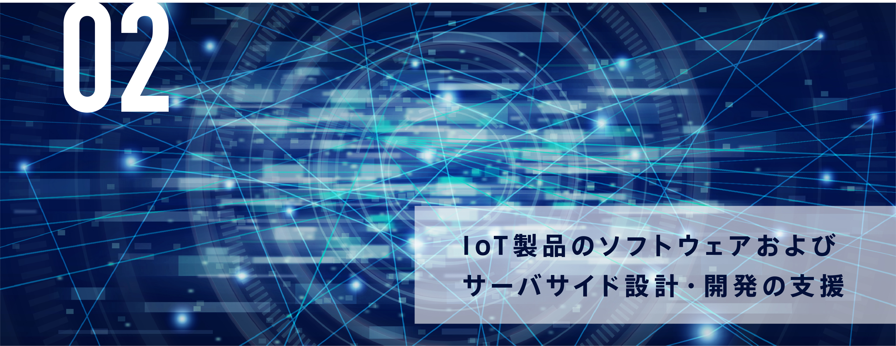

合同会社もりたつ技商は
SERVICE
ご提供サービス
-
-


-
言語や環境問わず、ECやゲームなどの
様々な経験を活かしたシステム設計・開発支援が可能ECやゲームのサーバサイド、ネット広告領域の経験を活かし、言語や環境問わずご相談を承っております。
クロスプラットフォームな対話・機能呼び出し等の仕組み開発も可能です。
多様なニーズに応えるシステム設計・開発でお客様の事業構築、運用に貢献します。実績例IoT製品本体とLINEにまたがるクロスプラットフォームの仕組み開発
Azure Cognitive Service、LINE BRAINでのサービス投入 -

ソフトウェアのみならず、
ユーザーID管理やCRM連携などの開発が可能
豊富な知見を活かして開発から課題解決までを支援・製品開発、ローンチ経験を踏まえた、切開開発のご支援が可能です。(ハードウェア部分を除く)
・ソフトウェア開発はもちろん、ユーザーID管理周り(OpenID Cobbect/OAuth2)、デバイス連携、
CRM連携(HubSpot,Zendesk)を始め、アプリ配信に伴う課金(月額・都度)についても承っております。
開発以外でのご支援の例ハードウェアの外注先の選定・相談
ECや倉庫、物流の準備等の製品販売 -
安定的な基盤構築やインフラ整備を実現
ツールを使わず、複数のサービスを横断的に活用した
コンサルティングサービスAzureやAWSを始めとし、さまざまなサービス・ツールを利用した基盤構築やインフラ整備だけでなく、
自作サーバやベンダー製のサーバ、ネットワーク機器の使用経験を活かしたオンプレミス環境での
構築運用のご相談も承っております。その他、CI/CD環境の構築やリリースフローの整備などの経験を
活かし、ツールを問わず、環境整備にまつわるご相談も可能です。
利用ツール・サービス例Azure（著書発行の実績あり）・ GCPのBigQuery/GAE
AWS（AWS Summit登壇経験あり） -

経営者・技術者の双方の観点で組織体制や技術選定が可能
中長期の事業計画を 実現させるコンサルティングをご提供
事業計画に対する技術選定や設計の妥当性、実現可能性を経営者・技術者双方の観点でコンサルティングいたします。
これらの経験を活かしたコンサルティングが可能スタートアップでの開発担当役員やCTO経験
クラウドベンダーでの実務経験
BUSINESS AREAS
取扱可能な領域
-
言 語
・C#(.NET Core) ・Golang ・Perl
・PHP ・Java(Android)
・JavaScript(Node.js) -
ツール
・VSCode ・Android Studio ・Unity
・Visual Studio ・GitHub ・Azure DevOps
・Docker ・Kubernetes
-
環 境
・GCP/Firebase
・Azure, AWS
・オンプレミス環境 -
D B
・Cloud SQL ・Azure Cosmos DB
・SQL Database ・MySQL ・Redis
・Azure Table Storage ・Cloud Firestore